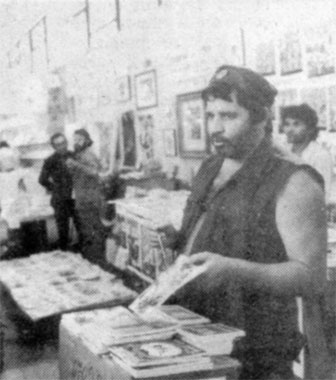

A vida
Quem foi
Palhaço de circo, camelô, funileiro, jornalista. Virou o maior dramaturgo do avesso do Brasil. Contava a vida de quem ninguém quer ver.
Ver a biografia
O teatro
A obra
Barrela, Navalha na Carne, Dois Perdidos numa Noite Suja. Peças escritas com a fala da cadeia, do porto, do puteiro. Teatro sem enfeite.
Ver o teatro
21 anos proibido
A censura
Barrela ficou vinte e um anos proibida. Peça atrás de peça, a ditadura calou o autor. Ele não recuou, não pediu perdão, não mudou de assunto.
Ler sobre a censura
A literatura
Os livros
Quando proibiram o palco, ele foi pro papel. Querô, Nas Quebradas do Mundaréu. Vendia os próprios livros na rua, camelô da literatura.
Ver os livros
A imprensa
O repórter
Coluna diária, crônica de futebol, cobertura de Carnaval. Escrevia teatro em forma de reportagem e reportagem com alma de teatro.
Ver jornais e revistas
As fotografias
O álbum
Fora da briga, um homem de casa. Walderez, os filhos, os netos, os amigos. As fotos de família de quem quase não parava quieto.
Ver o álbum